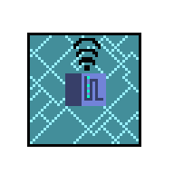
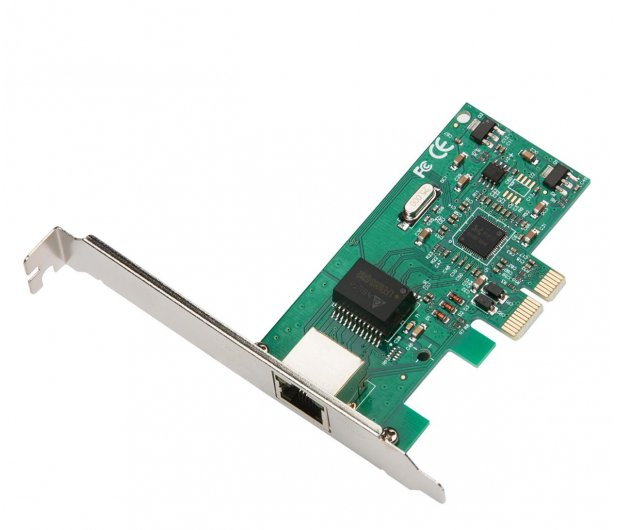
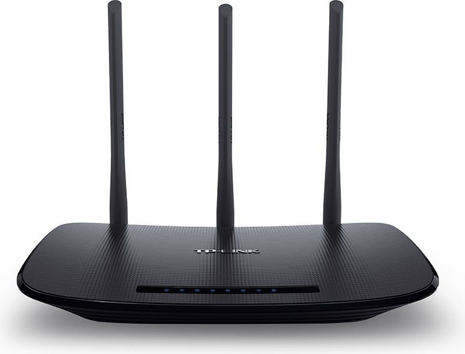
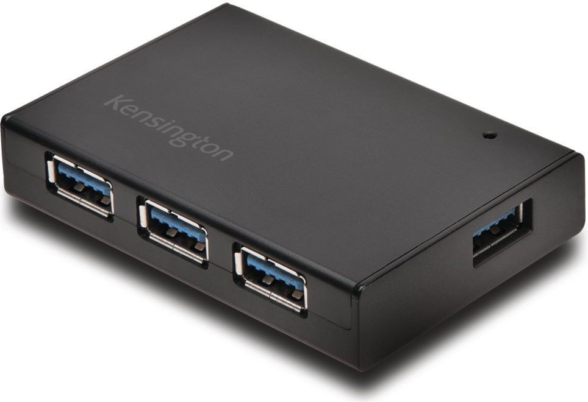
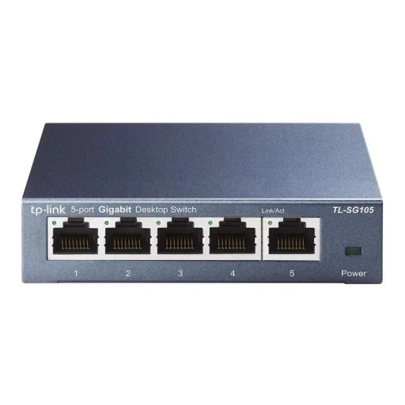
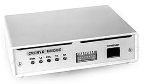

Sieć LAN w firmie. Rodzaje sieci. Urządzenia sieciowe w firmie. Rozpoznawanie urządzeń i czytanie dokumentacji

Sieć LAN w firmie jest bardzo potrzebna do sprawnego wykonywania działań.
Firmowa sieć pozwala na przesyłanie ważnych danych między komputerami w firmie z dużą prędkością, pozwala także na wspólną pracę większej ilości komputerów i skuteczniejsze zabezpieczenie danych.
Warto wspomnieć także o tym że można podłączyć bezprzewodowo wiele urządzeń takich jak drukarki, skanery itp. do wielu komputerów przy użyciu sieci LAN.
Projektując sieć w firmie warto zapoznać się z rodzajami sieci:
LAN- Sieć zajmująca mały obszar. Sieć LAN występuje na przykład w naszych domach
MAN- Sieć zajmująca większy obszar. Np. Obejmująca całe miasto
WAN- Rozległa sieć połączonych ze sobą sieci LAN i MAN.
Urządzenia sieciowe
Karta sieciowa- Niezbędnik by podłączyć komputer do sieci

Router- Służy do łączenia sieci komputerowych, na przykład sieci Internet z domową siecią lokalną.

Koncentrator(przestarzały)- Służył do realizacji połączeń między komputerami w sieciach Ethernet na topologii gwiazdy

Switch- Służy do realizacji połączeń między komputerami w sieciach opartych na topologii gwiazdy.

Access point- Pozwala na połączenie się z siecią za pomocą wifi
Bridge- Pozwala na zmianę sygnału bezprzewodowego na połączenie kablowe

Do urządzeń sieciowych zaliczamy także tzw. Pasywne, takie jak:
Patch Panel
Kable
Gniazdka
Szafy RACK na sprzęt sieciowy
Dokumentacja techniczna pozwoli nam na zapozananie się z zakupionym sprzętem, w niektóych przypadkach są w nich zawarte hasła umożliwiające konfigurację urządzenia.